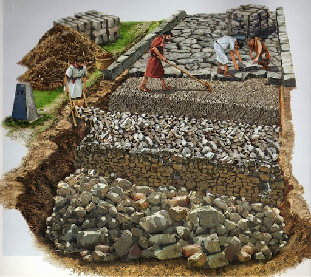

Transportul in Antichitate si Evul Mediu
Drumuri
drumurile au fost fundamentale pentru dezvoltarea și funcționarea societăților umane. Ele au jucat un rol esențial în facilitarea transportului de mărfuri și persoane, în comunicare, comerț și în stabilirea legăturilor între diferite regiuni și comunități. Iată câteva aspecte cheie ale importanței drumurilor pentru transport în Antichitate și Evul Mediu:
Facilitarea comerțului: Drumurile au fost arterele principale ale comerțului în Antichitate și Evul Mediu. Ele au permis transportul mărfurilor între orașe, regiuni și chiar continente. Drumurile bine întreținute și conectate au stimulat schimburile economice și au favorizat creșterea și prosperitatea comunităților.
Mobilitatea și comunicarea: Drumurile au facilitat deplasarea persoanelor și comunicațiile între diferite regiuni și culturi. Ele au permis oamenilor să călătorească pentru comerț, schimburi culturale, religioase și politice, facilitând astfel împrăștierea ideilor și a cunoștințelor.
Apărarea și controlul: Drumurile au fost esențiale pentru apărarea și controlul teritoriilor și a imperiilor în Antichitate și Evul Mediu. Ele au permis mișcarea rapidă a trupelor și a proviziilor militare, permițând statelor și conducătorilor să-și extindă și să-și mențină dominația asupra teritoriilor lor.
Dezvoltarea infrastructurii: Construcția și întreținerea drumurilor au dus la dezvoltarea infrastructurii și tehnologiilor asociate, precum podurile, tunelurile și sistemele de drenaj. Aceste inovații au îmbunătățit condițiile de călătorie și au facilitat transportul pe distanțe lungi și în condiții variate de teren.

Legătura între orașe și sate: Drumurile au servit drept legături vitale între orașe și sate, conectând centrele urbane cu zonele agricole și de producție. Aceasta a permis schimbul de produse agricole și manufacturate și a contribuit la echilibrarea economiilor locale.